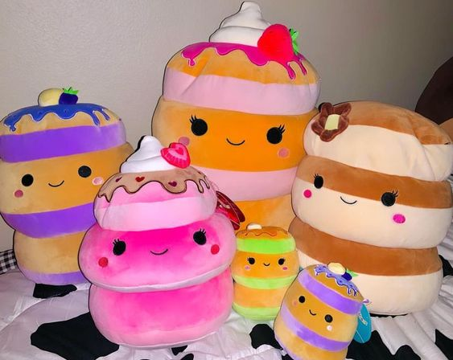
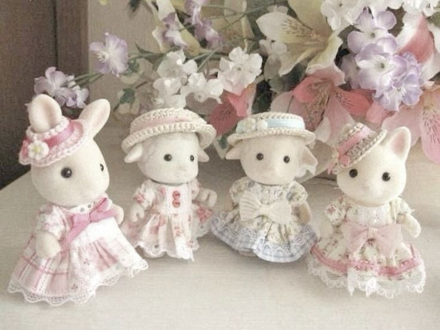

˶ᵔ ᵕ ᵔ˶ : squishmallows
if you are someone who doesnt really like dolls or small toys, but love soft and squishy plushies that come in a vareity of kinds squishmallows would be perfect for you! not only do they have adorable animals, theyve also worked with brands such as sanrio and disney to make squishies of iconic characters. very cute!!!
˶ᵔ ᵕ ᵔ˶ : funko pops
funko pops are the perfect addition to a collectors shelf. if you are someone who doesnt like toys or stuffies, but like the collectables and want some merchandise for your room, these are the perfect additions. there is a funko pop for almost every character you can imagine. you cant go wrong!!

˶ᵔ ᵕ ᵔ˶ : calico critters
to conclude this blog, i wanted to include a unique toy that merges the fluffiness and cuteness of a plushie and also still has the properties and accessories that come with a toy. calico critters are adorable bunny or cat figurines that are fuzzy and come with various sets and items. they are perfect for people who want soft, cute animals and also want toys and large add-ons!
